บอร์ด Raspberry Pi 4 Model B และ Raspberry Pi OS (64-bit): การใช้งานแบบ Headless#
▷ บอร์ด Raspberry Pi 4 Model B#
บริษัท Raspberry Pi Trading Ltd. / Raspberry Pi Foundation (Cambridge, UK) เป็นที่รู้จักในฐานะผู้ผลิตบอร์ด Raspberry Pi (RPi) จัดอยู่ในประเภทที่เรียกว่า "คอมพิวเตอร์บอร์ดเดี่ยว" (Single Board Computer: SBC) ที่ใช้ชิป SoC (System-on-Chip) ของบริษัท Broadcom ภายในมีตัวประมวลผลตามสถาปัตยกรรมของ ARM Cortex-A Series
โครงการนี้ได้เริ่มพัฒนาจากโมเดลรุ่นแรก ตั้งแต่ปีค.ศ. 2012 บอร์ดรุ่นแรก ๆ ใช้ตัวประมวลผล 32 บิต ที่มีหลายแกน ต่อมามีการเปลี่ยนมาใช้ตัวประมวลผล 64 บิต ตั้งแต่ Raspberry Pi 3 มาจนถึงโมเดลล่าสุดในปัจจุบันคือ Raspberry Pi 4 Model B (ในขณะที่เขียนเอกสารนี้) ซึ่งมีหน่วยความจำ SRAM ให้เลือกใช้ 2GB, 4GB และ 8GB ตามลำดับ สามารถประมวลผลด้วยความเร็ว 1.5GHz หรือสูงกว่า
บอร์ด RPi มีความสามารถในการประมวลผลมากพอที่จะนำมาใช้เป็นคอมพิวเตอร์อเนกประสงค์ที่มีขนาดเล็กและใช้พลังงานต่ำ เช่น การใช้งานในลักษณะเป็นเครื่องแม่ข่าย (Server) ในระบบเครือข่ายหรือใช้งานแบบตั้งโต๊ะ (Desktop Computer) หรือใช้งานเป็นระบบคอมพิวเตอร์ฝังตัว (Embedded Computer)
▷ การเริ่มต้นใช้งานบอร์ด Raspberry Pi (64-bit)#
ขั้นตอนการเริ่มต้นการใช้งานบอร์ด Raspberry Pi มีดังนี้
- เตรียมอุปกรณ์ฮาร์ดแวร์ ได้แก่
- เลือกใช้บอร์ด RPi 4 Model B (หรือจะเป็นรุ่น RPi 3 Model B/B+ ก็ได้)
- อุปกรณ์แปลงไฟฟ้า AC-DC Adapter ที่มีเอาต์พุต 5V / 3W สำหรับบอร์ด RPi และมีคอนเนกเตอร์แบบ USB Type-C สำหรับจ่ายไฟ
- การ์ดหน่วยความจำ MicroSD คลาส 10 (หรือดีกว่า) มีความจุขั้นต่ำ 8GB
- อุปกรณ์ USB Memory Card Reader สำหรับการเขียนหรืออ่านการ์ดหน่วยความจำ MicroSD ผ่านทางพอร์ต USB (ถ้าคอมพิวเตอร์ผู้ใช้ ไม่มีอุปกรณ์แบบ built-in)
- สาย LAN ในกรณีที่เชื่อมต่อเข้ากับระบบเครือข่ายด้วย Ethernet
- ดาวน์โหลดไฟล์ Raspberry OS Image (64-bit) เช่น สำหรับ RPi 4
- แนะนำให้ใช้ Official Raspberry OS Image แต่ยังมีตัวเลือกอื่นอีกที่เป็น ระบบปฏิบัติการและสามารถนำมาใช้กับ RPi ได้ เช่น Ubuntu เป็นต้น
- ติดตั้งไฟล์ Raspberry Pi OS Image ลงในการ์ดหน่วยความจำ และสามารถใช้ซอฟต์แวร์ Raspberry Pi Imager สำหรับขั้นตอนนี้
- เสียบการ์ดหน่วยความจำที่ได้มีการติดตั้ง Raspberry Pi OS ไว้แล้ว และป้อนแรงดันไฟเลี้ยงจากอุปกรณ์ 5V Adapter เข้ากับคอนเนกเตอร์ USB Type-C ของบอร์ด เพื่อให้ RPi เริ่มต้นบูทระบบ
- ตรวจสอบการเชื่อมต่อการทำงานของบอร์ด RPi เข้ากับระบบเครือข่าย LAN / WLAN เพื่อทราบหมายเลขแอดเดรสของบอร์ด (IP Address) ที่ได้รับมาโดยอัตโนมัติจาก DHCP Server ในระบบเครือข่าย
- ทำขั้นตอน Login เพื่อเข้าใช้งานบอร์ด RPi แบบรีโมทผ่านทาง SSH (Secure Shell)
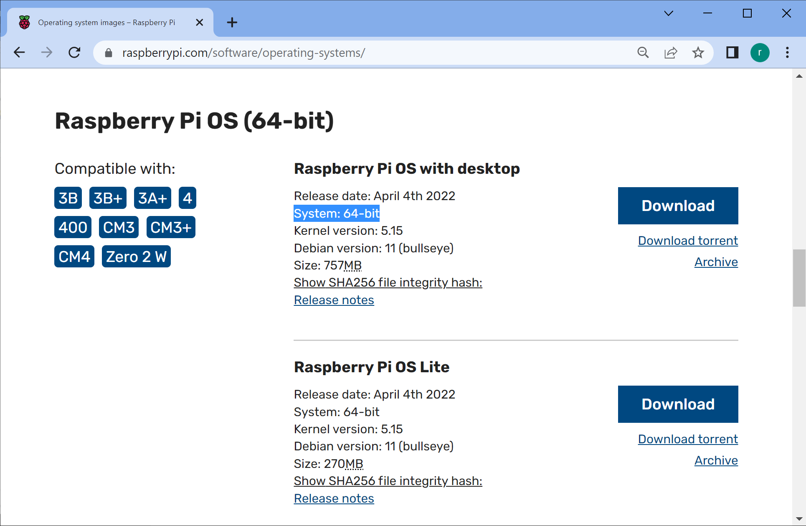
รูป: เว็บไซต์ของ Raspberry Pi Trading สำหรับดาวน์โหลดซอฟต์แวร์ที่เป็น OS Images สำหรับบอร์ด RPi
ไฟล์ที่ดาวน์โหลดมาสำหรับ Raspberry Pi OS Image มีชื่อไฟล์ลงท้ายด้วย img.xz ให้ทำการแตกไฟล์ออก (เช่น ใช้โปรแกรม 7-Zip) เพื่อให้ได้ไฟล์นามสกุล .img
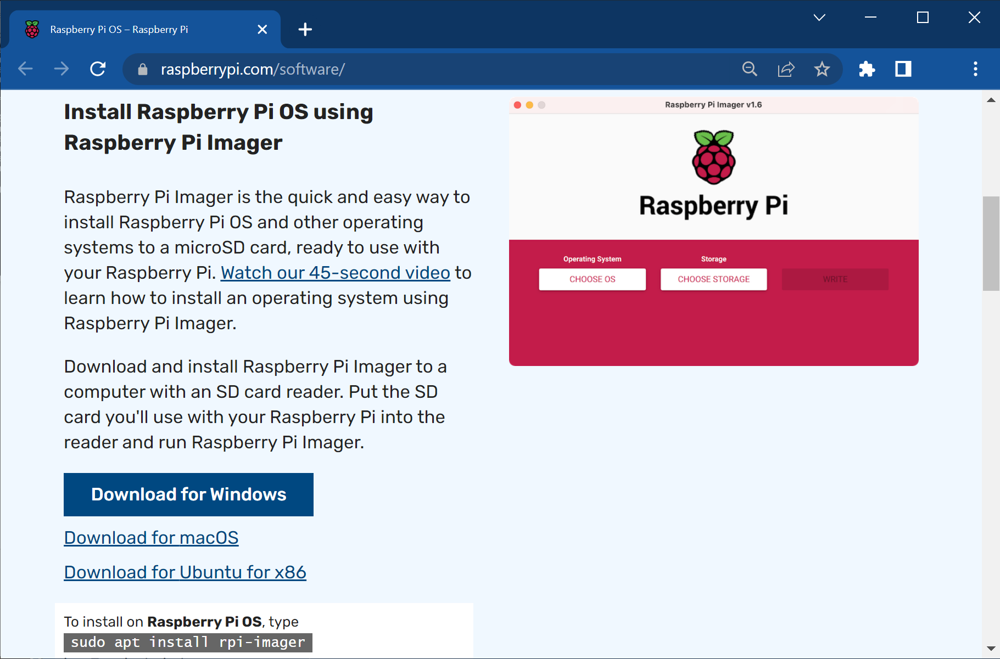
รูป: ไฟล์สำหรับการติดตั้งและใช้งาน Raspberry Pi Imager
ในตัวอย่างนี่ได้ติดตั้งและใช้งานซอฟต์แวร์ Raspberry Pi Imager (ทดลองใช้เวอร์ชัน v1.72 สำหรับ Windows) และเลือกไฟล์ OS Image (.img) เพื่อนำไปเขียนข้อมูลลงในการ์ดหน่วยความจำ
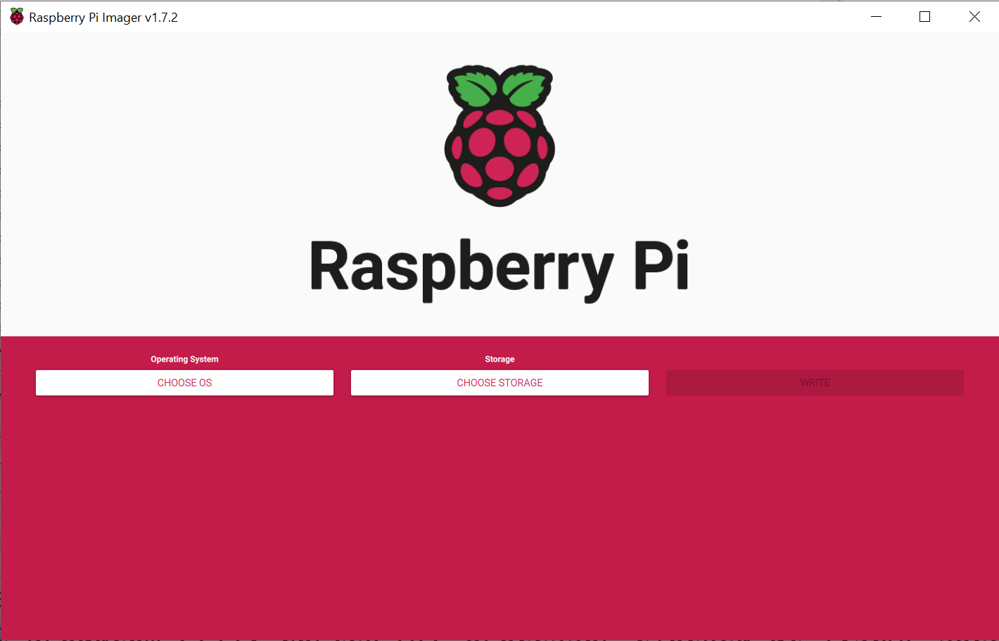
รูป: เริ่มต้นใช้งาน Raspberry Pi Imager (for Windows)
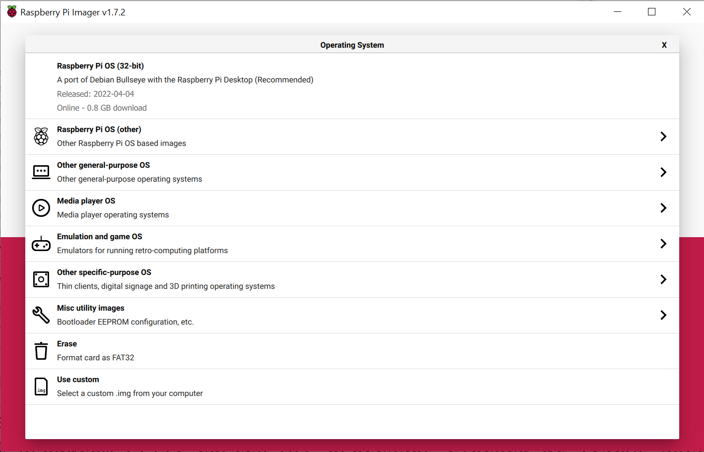
รูป: จากรายการเมูนคำสั่ง Choose OS ให้เลือก Use custom เพื่อเลือกไฟล์ .img หรือ .img.xz ที่ดาวน์โหลดมาแล้ว
เมื่อได้เลือกไฟล์สำหรับ OS Image แล้ว ถัดไปให้เลือกอุปกรณ์ที่จะเขียนข้อมูล ซึ่งก็คือ การ์ดหน่วยความจำ (microSD) ที่เสียบอยู่ในช่อง Built-in / USB Card Reader และมองเห็นในเครื่องคอมพิวเตอร์ของผู้ใช้
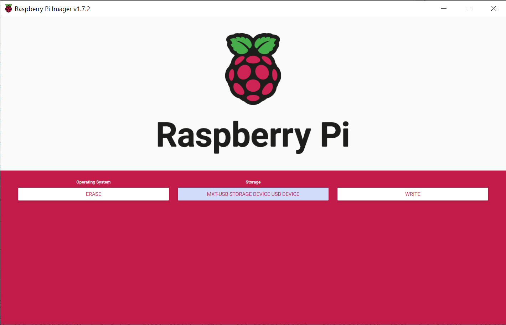
รูป: เลือกรายการสำหรับ Storage
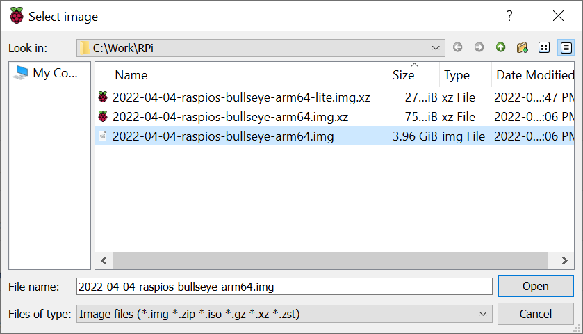
รูป: เลือกไฟล์ OS Image: 64-bit ARM ที่ต้องการจะเขียนข้อมูลลงในการ์ดหน่วยความจำ (เลือกไฟล์ .img หรือ img.xz ก็ได้)
ถ้าต้องการตั้งค่าเพิ่มเติม ให้กดปุ่ม Advanced Options (อยู่บริเวณด้านขวาล่าง) เช่น การเปิดใช้งาน SSH (Secure Shell) การสร้างบัญชีผู้ใช้ pi และตั้งรหัสผ่านสำหรับผู้ใช้ การตั้งค่า SSID และรหัสผ่าน
สำหรับเชื่อมต่อกับระบบเครือข่าย Wi-Fi เป็นต้น
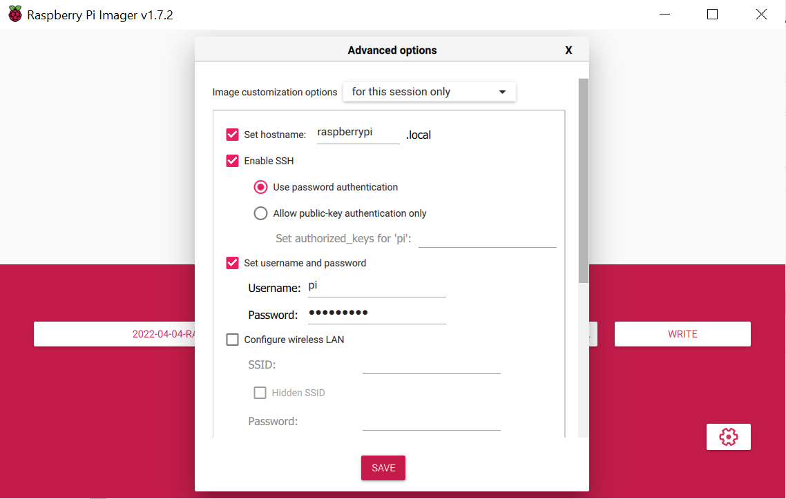
รูป: การตั้งค่าสำหรับ Advanced Options ก่อนการติดตั้ง OS Image ไปยังการ์ด MicroSD
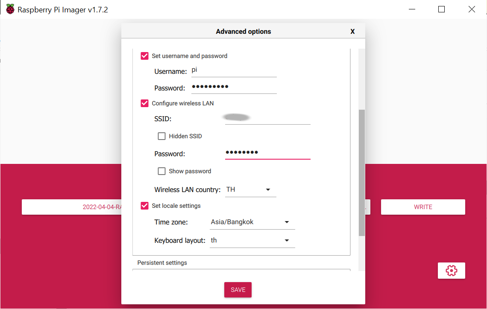
รูป: การตั้งค่าสำหรับ Advanced Options
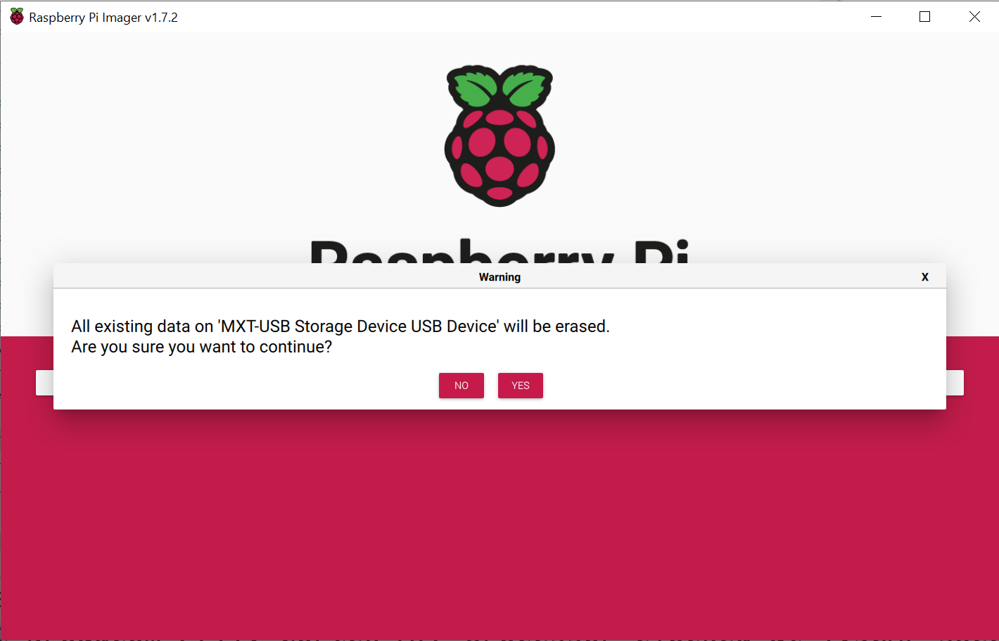
รูป: กดปุ่ม WRITE เพื่อเริ่มต้นเขียนไฟล์ (แต่แนะนำให้ทำขั้นตอน Erase เพื่อลบข้อมูลทั้งหมดในการ์ดหน่วยความจำและฟอร์แมตให้เป็น FAT32 ก่อนเขียนข้อมูลใหม่ลงไป)
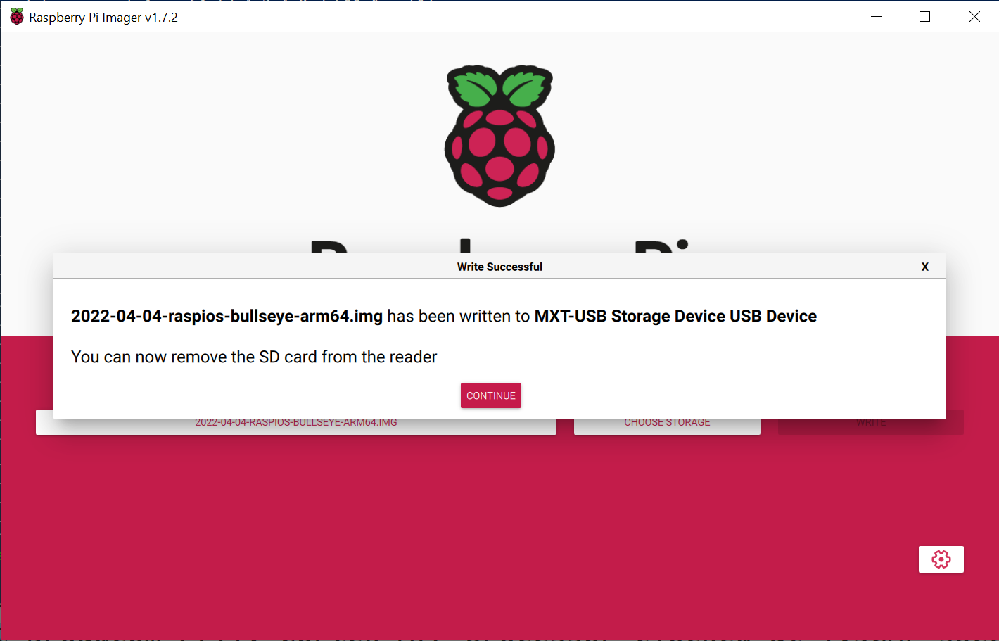
รูป: เมื่อ Raspberry Pi Imager เขียนข้อมูลได้สำเร็จแล้ว
เมื่อเขียนข้อมูลลงใน microSD สำเร็จแล้ว คอมพิวเตอร์ของผู้ใช้จะมองเห็นไดรฟ์
ที่มีชื่อว่า boot ซึ่งจะมีไฟล์ต่าง ๆ ของระบบสำหรับการตั้งค่าและบูทระบบ Linux
▷ การใช้งานแบบ Headless#
การใช้งานสำหรับคอมพิวเตอร์โดยทั่วไป ผู้ใช้ก็จะต้องต่อเครื่องคอมพิวเตอร์ เข้ากับจอแสดงผล (เช่น ผ่านพอร์ต Mini-HDMI ของบอร์ด RPi) และอุปกรณ์ที่เป็นอินพุตสำหรับผู้ใช้ (Human Input Devices: HID) เช่น แป้นพิมพ์และเมาส์ เป็นต้น
แต่สำหรับการใช้งานบอร์ด RPi ก็ไม่จำเป็นต้องต่ออุปกรณ์อินพุต-เอาต์พุตสำหรับผู้ใช้ตามที่กล่าวไป การใช้งานในลักษณะนี้เรียกว่า การใช้งานแบบ Headless
สำหรับการใช้งานแบบ Headless แนะนำให้เพิ่มไฟล์หรือแก้ไขต่อไปนี้ใน /boot
(มองเห็นเป็นไดรฟ์ใน Windows ที่มีชื่อว่า boot)
- เพิ่มไฟล์
sshซึ่งภายในว่างเปล่า (เป็น Empty File) และการเพิ่มไฟล์นี้ ก็เพื่อเปิดใช้งาน SSH Server / Service เมื่อเริ่มใช้งานระบบครั้งแรก และจะทำให้ผู้ใช้สามารถเข้าใช้งานแบบรีโมท ผ่านเครือข่ายได้ด้วย SSH - เพิ่มไฟล์
userinfoซึ่งภายในจะมีชื่อผู้ใช้และรหัสผ่าน เพื่อใช้ในการสร้างบัญชีผู้ใช้ใหม่โดยอัตโนมัติ เมื่อเริ่มใช้งานระบบครั้งแรก (สำหรับ Raspberry OS Bullseye ไม่มีการสร้างบัญชีผู้ใช้piให้มา ด้วยเหตุผลทางด้านความปลอดภัย ดังนั้นจะต้องสร้างบัญชีผู้ใช้เพิ่มเอง) - เพิ่มไฟล์
wpa_supplicantซึ่งใช้สำหรับการตั้งค่าเพื่อให้บอร์ด RPi สามารถเชื่อมต่อด้วย Wi-Fi เข้ากับอุปกรณ์ Access Point ในระบบเครือข่ายไร้สาย (ในกรณีที่ไม่ได้ใช้วิธีการเชื่อมต่อด้วยสาย LAN ที่พอร์ต RJ45)
ข้อสังเกต: ถ้าได้สร้างบัญชีผู้ใช้ ได้เปิดใช้งาน SSH และตั้งค่าสำหรับเชื่อมต่อ WiFi ไว้แล้ว เมื่อทำขั้นตอนการเขียนไฟล์ OS Image ด้วย Raspberry Pi Imager ก็ไม่ต้องทำขั้นตอนนี้
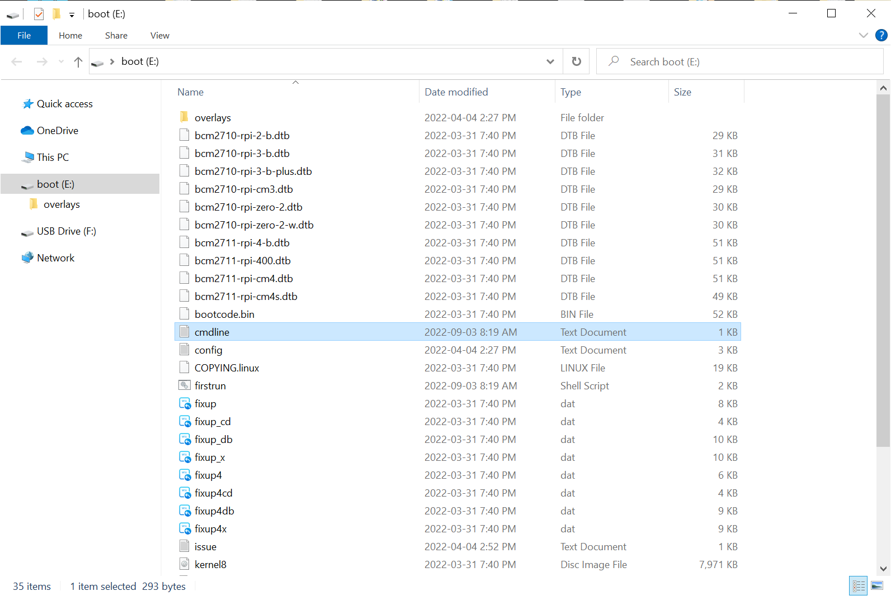
รูป: ไดรฟ์ boot ที่มองเห็นหลังจากการเขียนไฟล์ OS Image ไปยังการ์ดหน่วยความจำได้สำเร็จแล้ว
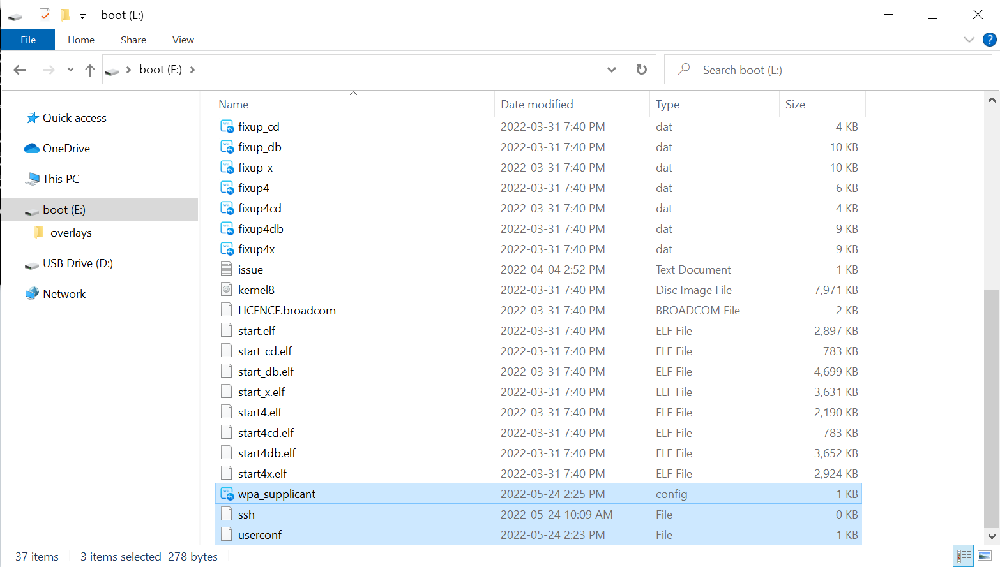
รูป: รายการไฟล์ที่ได้มีการเพิ่มไฟล์ลงในไดรฟ์ boot ในการ์ด microSD
ตัวอย่างเนื้อหาภายในไฟล์ที่จะเพิ่มในไดรฟ์ boot
1) ตัวอย่างข้อความที่มีเพียงหนึ่งบรรทัดในไฟล์ userinfo สำหรับบัญชีผู้ใช้ pi และตั้งค่ารหัสผ่านเป็น raspberry
pi:$6$hngYxN8Q45.UyhCI$tUzLqE5JIa6cXU47.../41fM/1
ข้อความในบรรทัดข้างบน (ซึ่งมีการตัดและดัดแปลงบ้างส่วนให้สั้นลง) แบ่งออกเป็นส่วนต่าง ๆ โดยใช้เครื่องหมาย $ เป็นตัวแบ่ง โดยมีส่วนแรกเป็นชื่อบัญชีผู้ใช้ pi ส่วนที่สองเป็นข้อความสำหรับ Salt เพื่อใช้เป็นค่าในการเข้ารหัส และส่วนที่สามคือ ข้อความที่ถูกเข้ารหัสด้วยวิธี SHA512 โดยคำนวณจากค่า Salt และรหัสผ่านของผู้ใช้ และข้อความนี้จะถูกนำไปใส่ไว้ในไฟล์ /etc/shadow เมื่อมีการบูทระบบและเข้าใช้งานเป็นครั้งแรก
2) ตัวอย่างการใช้คำสั่ง openssl เพื่อคำนวณค่า Secure Hash Value
สำหรับรหัสผ่าน (ในกรณีตัวอย่างนี้คือ raspberry คือ plaintext password) ด้วยวิธี -6 ซึ่งหมายถึง SHA512 และให้ข้อความเป็นเอาต์พุต
# create an encrypted password from a plaintext password
$ echo 'raspberry' | openssl passwd -6 -stdin
3) ตัวอย่างข้อความ (อยู่ในหนึ่งบรรทัดเดียวกัน) ในไฟล์ /boot/cmdlines.txt
console=serial0,115200 console=tty1 root=PARTUUID=xxxxxxxx-xx
rootfstype=ext4 fsck.repair=yes rootwait quiet splash
plymouth.ignore-serial-consoles
ตัวอย่างข้อความในไฟล์ wpa_supplicant สำหรับการเชื่อมต่อกับอุปกรณ์ Wi-Fi Access Point
ตามที่ระบุไว้โดยชื่อ SSID โดยอัตโนมัติ และข้อความจากไฟล์นี้จะถูกนำไปใส่ไว้ในไฟล์
/etc/wpa_supplicant/wpa_supplicant.conf ของระบบไฟล์สำหรับ Raspberry Pi OS เมื่อบูทระบบครั้งแรก
country=TH
ctrl_interface=DIR=/var/run/wpa_supplicant GROUP=netdev
update_config=1
network={
ssid="YOUR_WIFI_SSID"
psk="YOUR_WIFI_PASSWORD"
key_mgmt=WPA-PSK
}
ถ้าต้องการเปิดใช้งาน Serial Console
ตามที่ระบุไว้ในเอกสาร "The config.txt file" ให้แก้ไขไฟล์ /boot/config.txt โดยเพิ่มข้อความ enable_uart=1 ต่อท้ายอีกหนึ่งบรรทัด
และในไฟล์ /boot/cmdline.txt ให้เพิ่มข้อความ console=serial0,115200 เป็นข้อความเริ่มต้นของบรรทัด
- หากเชื่อมต่อกับบอร์ด RPi ผ่านระบบเครือข่ายไม่ได้ ก็สามารถใช้การเชื่อมต่อด้วยวิธีนี้แทนได้ (ไม่จำเป็นต้องนำจอแสดงผลและคีย์บอร์ดมาต่อเพิ่ม)
- แต่จะต้องมีอุปกรณ์ USB-to-Serial Adapter เชื่อมต่อจากคอมพิวเตอร์ของผู้ใช้ไปยังบอร์ด RPi เพื่อทำคำสั่งต่าง ๆ ผ่านทาง Serial Console (Baudrate: 115200)
- ขา GPIO-14 (UART0_TXD) และ GPIO-15 (UART0_RXD) ของคอนเนกเตอร์แบบ 40-pin บนบอร์ด RPi สามารถใช้เป็นขาสัญญาณ TXD/RXD เพื่อเชื่อมต่อกับอุปกรณ์ USB-to-Serial Adapter
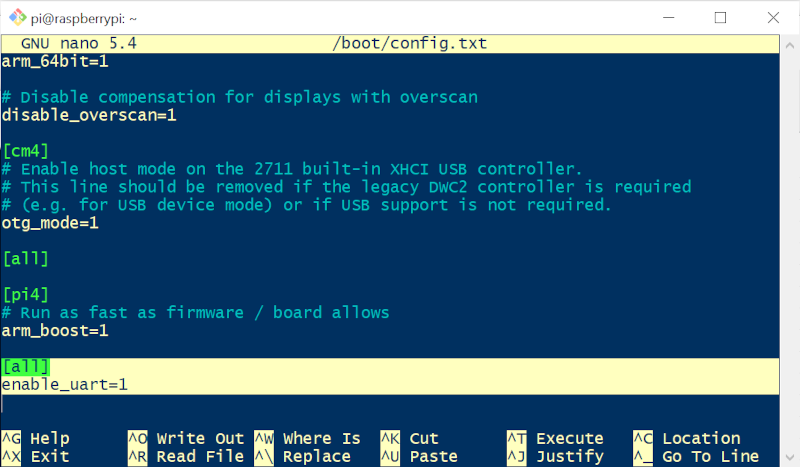
รูป: การตั้งค่า Configuration ในไฟล์ /boot/config.txt
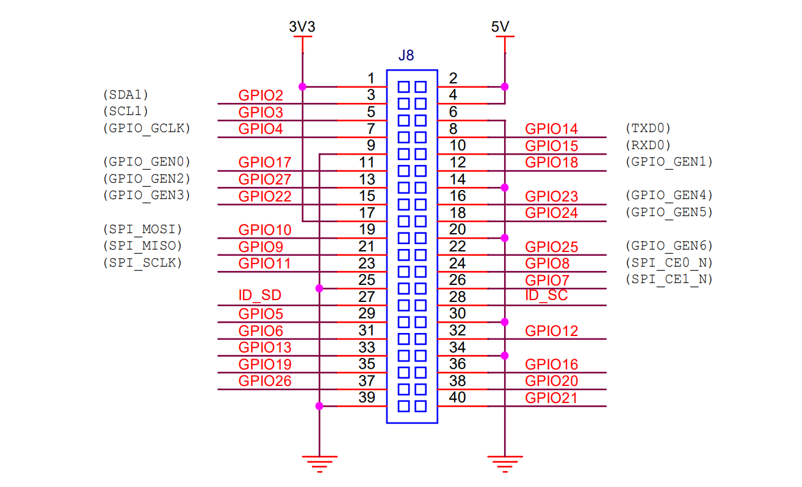
รูป: ตำแหน่งของขา GPIO ของคอนเนกเตอร์แบบ 40-pin
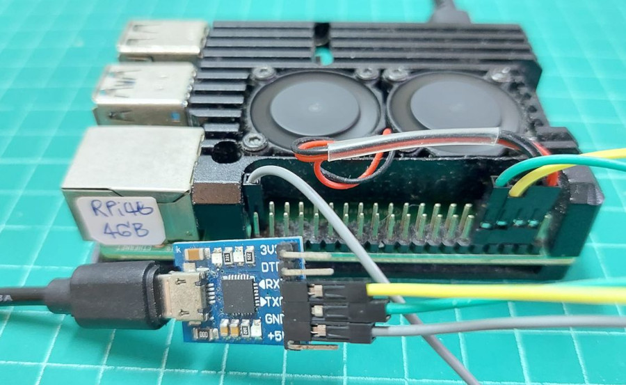
รูป: ตัวอย่างการเชื่อมต่อโมดูล USB-to-Serial Adapter (CP2104 chip) กับบอร์ด RPi
ขาของ RPi ที่ใช้ในการเชื่อมต่อได้ TX, RX, GND ซึ่งตรงกับขาหมายเลข 8,10,39 ของ 40-Pin Header ตามลำดับ โดยนำไปต่อกับขา RX, TX, GND ของโมดูล USB-to-Serial
▷ การบูทระบบและเข้าใช้งานด้วย SSH#
ขั้นตอนถัดไป ให้นำการ์ด microSD ไปเสียบใช้งานกับบอร์ด RPi 4B เพื่อบูทระบบ แล้วใช้ซอฟต์แวร์ เช่น Angry IP Scanner ตรวจสอบอุปกรณ์ที่อยูในระบบเครือข่ายเดียวกันกับเครื่องคอมพิวเตอร์ของผู้ใช้ในขณะนั้น
ถ้าตรวจพบหมายเลข IP Address ของบอร์ด RPi
ก็สามารถเชื่อมต่อไปยังบอร์ดด้วยซอฟต์แวร์ที่ทำหน้าที่เป็น SSH Client
และเข้าใช้งานบัญชีผู้ใช้ pi และรหัสผ่านตามที่ได้สร้างเอาไว้
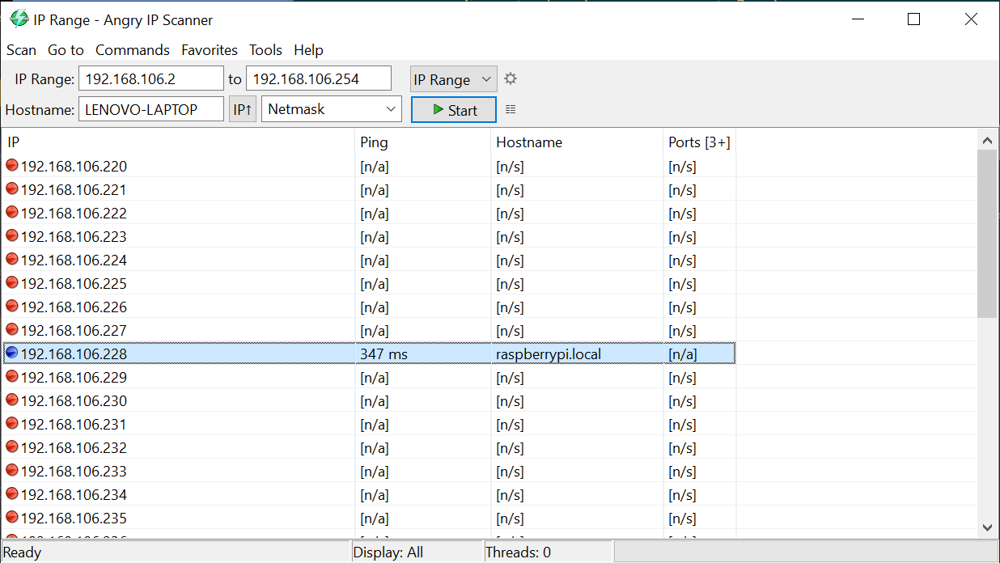
รูป: ตัวอย่างผลการสแกนหาแอดเดรส (IPv4 address) ของบอร์ด RPi
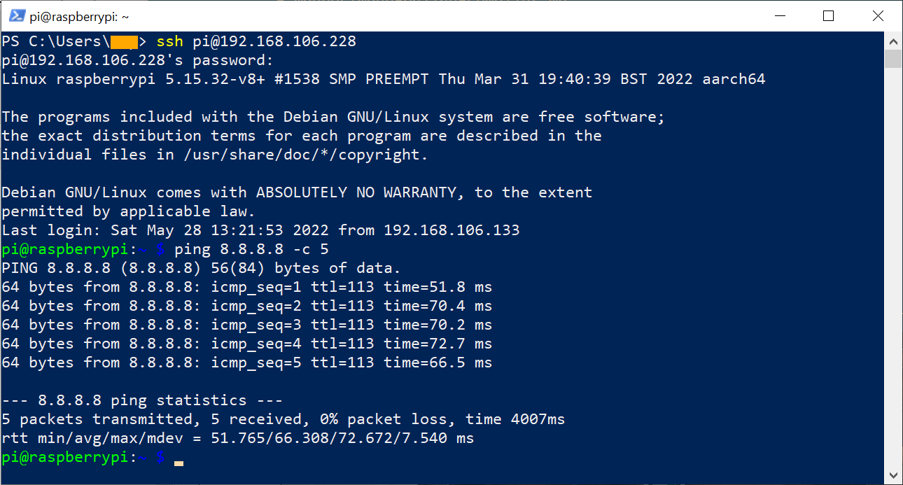
รูป: ตัวอย่างการเข้าใช้งานด้วย SSH client
และทำคำสั่ง ping (ไปยังคอมพิวเตอร์ที่ทำหน้าที่เป็น Public DNS Server)
เพื่อทดสอบการเชื่อมต่อกับอินเทอร์เน็ตจากบอร์ด RPi
ตัวอย่างการคำสั่งแบบ Command Line ผ่านทาง SSH Console / Bash Shell
ในบรรทัดที่เริ่มต้นด้วย # เป็นบรรทัดสำหรับ Line Comment แต่ถ้าเริ่มต้นด้วยสัญลักษณ์ $ หมายถึง การคำสั่ง เช่น uname เช่น คำสั่งตรวจสอบและแสดงเวอร์ชันของ Linux Kernel และชื่อสถาปัตยกรรมของซีพียู
# get the kernel name, kernel version, kernel release date
$ uname -s -r -v
Linux 5.15.32-v8+ #1538 SMP PREEMPT Thu Mar 31 19:40:39 BST 2022
# get the machine name: aarch64 = 64-bit ARM Cortex-A series CPU
$ uname -m
aarch64
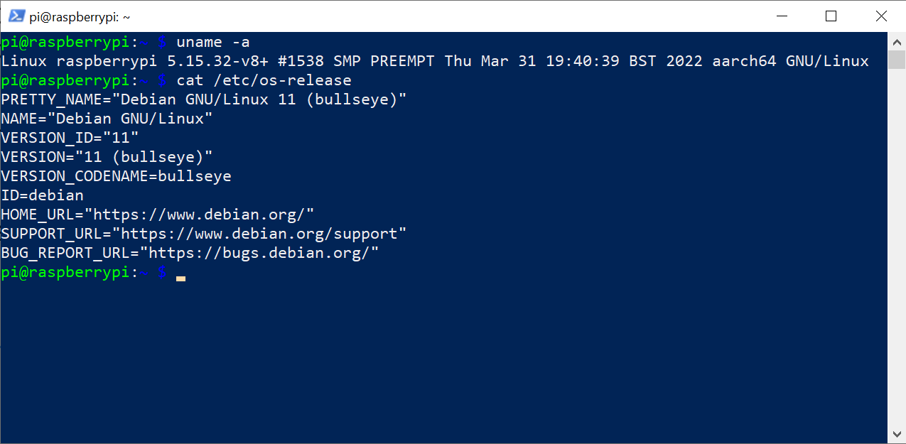
รูป: ตัวอย่างการทำคำสั่ง uname -a
▷ การตั้งค่าใช้งานสำหรับ RPi ด้วยคำสั่ง raspi-config#
Raspberry Pi OS มีคำสั่ง raspi-config สำหรับการตั้งค่าใช้งาน
โดยมีการแบ่งออกเป็นเมนูคำสั่งต่าง ๆ เมื่อพิมพ์คำสั่ง sudo raspi-config โดยใช้สิทธิ์เป็น root
(superuser) ก็จะปรากฏหน้าต่าง โดยใช้ปุ่มคีย์ Tab หรือลูกศร Arrow เลื่อนไปยังรายการเมนู
แล้วกดปุ่ม Enter สำหรับการเลือก หรือจะย้อนกลับไป ก็ให้ใช้ปุ่มข้อความ Back หรือจะออกจากโปรแกรมนี้ ก็กดปุ่ม ESC
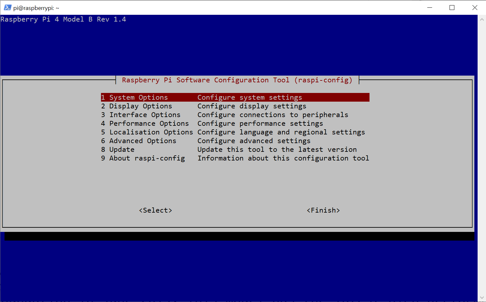
รูป: การใช้งานเมนูคำสั่งต่าง ๆ ของ raspi-config
หากต้องการใช้งาน RealVNC Server (พอร์ต 5900) เพื่อให้สามารถเข้าใช้งาน RPi แบบ Remote Desktop ก็ให้ไปที่เมนู Interface Options > VNC แล้วตั้งค่าเพื่อเปิดใช้งาน
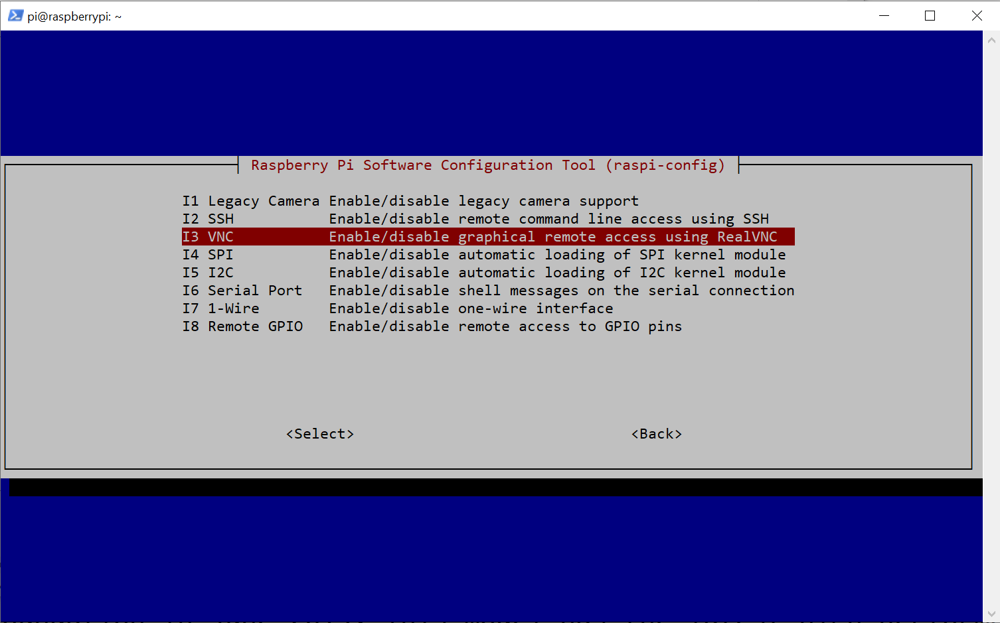
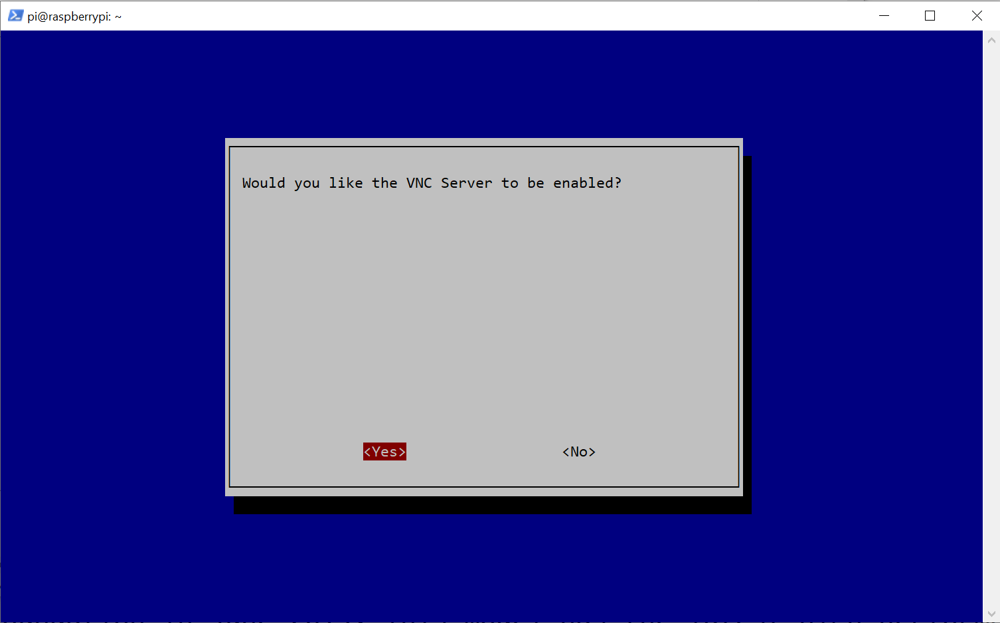
รูป: เมนูสำหรับเปิดใช้งาน VNC
สำหรับ VNC Client ให้ดาวน์โหลดซอฟต์แวร์ เช่น RealVNC Viewer มาติดตั้งและใช้งาน ในระบบ Windows
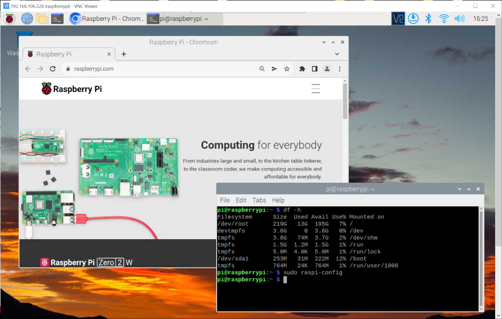
รูป: เมื่อเข้าใช้งาน Raspberry - Remote Desktop โดยใช้ RealVNC Viewer (for Windows)
▷ การแชร์การเชื่อมต่ออินเทอร์เน็ตจากเครื่องที่ใช้ Windows#
ในกรณีที่คอมพิวเตอร์ของผู้ใช้เป็น Windows 10 หรือ 11 และเชื่อมต่อผ่านเครือข่าย Wi-Fi ไปยังอินเทอร์เน็ตได้ในขณะใช้งาน และหากว่าต้องการให้บอร์ด Raspberry Pi เชื่อมต่อกับอินเทอร์เน็ตได้ด้วย โดยเลือกวิธีใช้สาย LAN ต่อเข้าที่พอร์ต RJ45 และไม่ได้เชื่อมต่อด้วย Wi-Fi ก็สามารถตั้งค่าให้เครื่อง Windows แชร์การใช้งานอินเทอร์เน็ตผ่านทาง Wi-Fi
ในกรณีนี้ต้องใช้สาย Ethernet / LAB cable เชื่อมต่อที่พอร์ต RJ45 ระหว่างบอร์ด RPi และคอมพิวเตอร์ของผู้ใช้ จากนั้นให้ตั้งค่าใน Control Panel ของ Windows ดังนี้

รูป: เปิด Control Panel > Network and Sharing Center แล้วคลิกเลือกเครือข่าย Wi-Fi ที่กำลังใช้งานอยู่ เพื่อตั้งค่า "Wi-Fi Properties"
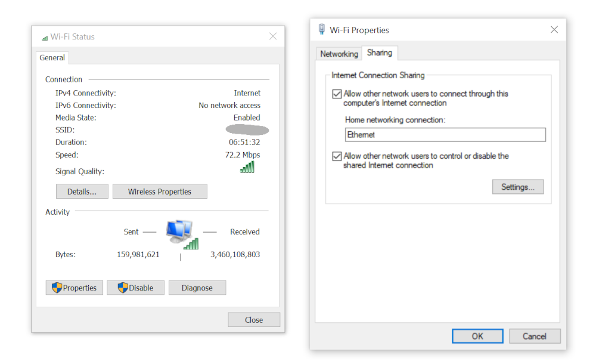
รูป: ตั้งค่าเพื่อการแชร์ Wi-Fi ที่เชื่อมต่อกับอินเทอร์เน็ต ให้แก่อุปกรณ์อื่นที่ต่อเข้ามาทาง Ethernet ของคอมพิวเตอร์ผู้ใช้ (ในกรณีนี้คือ บอร์ด RPi)
▷ กล่าวสรุป#
บทความนี้แนะนำการใช้งานบอร์ด Raspberry Pi 4 Model B ร่วมกับ Raspberry Pi OS (64-bit) และเข้าใช้งานแบบ Headless ผ่านระบบเครือข่ายและ Secure Shell (SSH) หรือเข้าใช้งานแบบ Remote Desktop ด้วย RealVNC Viewer
This work is licensed under a Creative Commons Attribution-ShareAlike 4.0 International License.
Created: 2022-05-25 | Last Updated: 2022-09-03